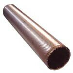
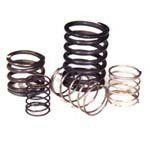
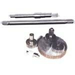
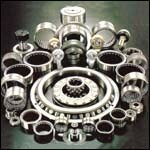
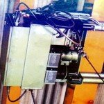
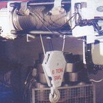
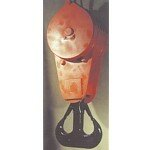
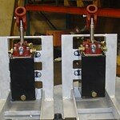
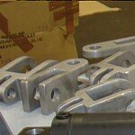
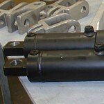

Noe av det vi har levert
Vi utfører service på taljer, skifter slitedeler og inspiserer alle komponenter. Vi planlegger servicen tett med kunden slik at driftsstansen blir så kort som mulig.
Her er et utvalg av arbeid fra verkstedet vårt.
Eksempler
IndustriHeistromler og kranmotorer
MaskineringAkslinger og tannhjul
MaritimtRedningsbåt-komponenter









